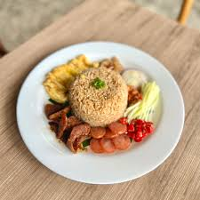
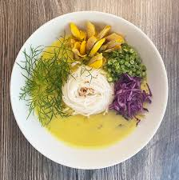

Fish Amok
Instruction:
- Prepare all the Kreoung Past ready with the right amount
- Heat the pan and pour the vegetable oil and wait for a the warm, then put kaffir lime leave, shrimp past, dried chilies past and all Kreoung Past together to fry until it smells good
- Then put fish fillet in and other recipes, fry them until the fish is cooked
- After that pour coconut milk and taste your favorite then it’s done
- Have the banana leaf wrapped with star gooseberry leaf placed inside, then add the ready Amok in
- Also add the cooked coconut milk on Amok and make some decoration with sliced lemongrass and chilies
- Amok then can be served with Jasmine rice
- Note: The original Amok Fish, with all the recipes mixing with fish and put in young coconut shell / wrapped banana leaf to be steamed as well as adding egg on it.


Kola Noodles
Instruction:
- Simmer the rice noodle until it’s soft, and ready to eat. Leave it aside.
- Boil eggs for 10 mins. Then wait until it’s cold then peel them, keep them aside.
- Chop garlic into small piece. Heat the flying pan until it’s hot. Then put a few drips of vegetable oil in, wait until it’s hot then put the chopped garlic in, stir slowly until it gets brown.
- Then pour that into the simmered rice noodle in the bowl. Mix well with the garlic and oil then add dark soy sauce in, stir for a while then add shredded vegetables in the bowl, just mixed for nice attractive colours.
- Crashed the peanuts, get some dried shrimps, keep them together.
- Sweet & Sour Fish Sauce (Teuk Trey Pa-em)
- Boil water until it’s boiled. Minced the garlic and put in the boil water. Then add sugar, salt, fish sauce, vinegar/lime. Then taste it as you like. Chili flakes can be added on later.
- It’s served as mixed noodle all together with shredded vegetables, and add Teuk Trey Pa-em as the dressing sauce.



Num Banh Chok Khmer
Instruction:
- Bring2-2.5L water to a boil, lower heat and add in the fish. Once the fish is cooked, remove it from the stock. Set the aside and debone the fish. Pound the Kroeung, sugar, salt and fish flesh together.
- Next, bring the fish stock to a boil, then add in the prahok, coconut milk, fish mixture, salt, fish sauce and palm sugar. Bring the broth to a boil once more. Serve hot with fresh vegetables, cooked Khmer noodles "Num Banh Chok" and condiments
- Vegetables
- Banana blossom, sesbania, cucumber, long green bean, bean sprouts, water lily and cabbage are most commomly used.
Teuk Kreoung
Instruction:
- Heat garlic, pea eggplant and chilies in the pot, keep it heated until it goes brown. Leave them in the bowl, wait until it’s cold.
- If you don’t use fillet fish, peel the skin off after boiling/smoking/grilling, remove the bones and mash fish flesh in a bowl and keep aside.
- Boil water until it’s boiled then put Prohuk in the water and stir it till it is mixed well. Then pour into the mash fish bowl.
- Take the mash fish to mix with all ingredients, sugar, lemon/ripe tamarind sauce and mixed with Prohuk hot water all together.
- Taste it and keep adding things till your preference and put chili on it for decoration or for those who love a bit of hot. You can add crashed peanuts if you like.
Bay Kdaing
Instruction:
- Making Crispy rice crackers:
- Rinse three cups of rice in rice cooker, then put two cups of water in the rice.
- Then let it boil for 20mins until the rice is well-cooked. Leave it until it’s cold to mat into piece.
- Heat the 8 cups of oil in the pot until it gets up to 150-180c put the matted rice into hot oil.
- Wait for 20-30 minutes until the rice goes brown and crispy both sides, then pick them up from the oil. Wait until it cool.
- Making Dipping sauce
- Heat oil over medium high heat around 100c. Add minced chicken and chili paste. Cook for 3-5 minutes while breaking chicken apart.
- Add garlic then add in coconut milk, sugar, peanuts, fish sauce, and salt and then stir until it gets thick. Cook for an additional 10 minutes or until chicken is no longer pink and garlic have softened and flavors have blended.
- Serve warm with crispy rice or bread.
Traditional Cambodian Donuts
Instruction:
- Roll the dough and make them into ring shapes.
- Heat oil over medium high heat around 150c.
- Keep turning the ring in the hot oil, until they go brown around 15-30mins then pick them all up.
- Heat the pot until it gets hot to 50-80c.
- Then put palm sugar in, and keep stirring until it gets brown. Keep the heat low and keep stirring until it gets sticky.
- Then scoop it up on spread on the dough ring and springles the sesame seeds in the dough rings.